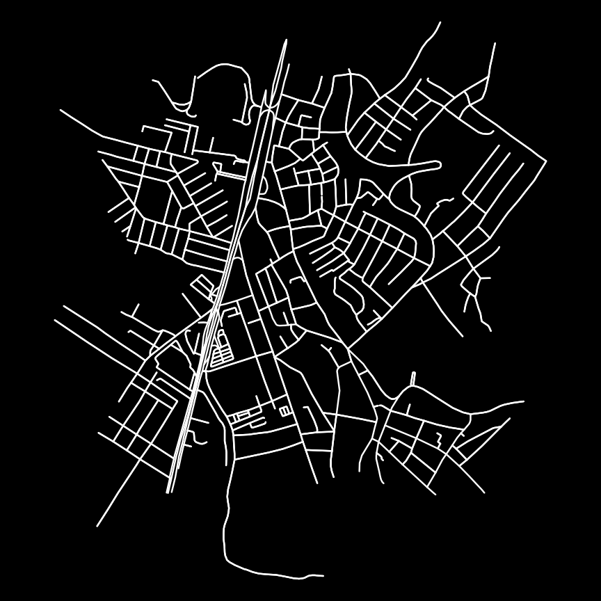
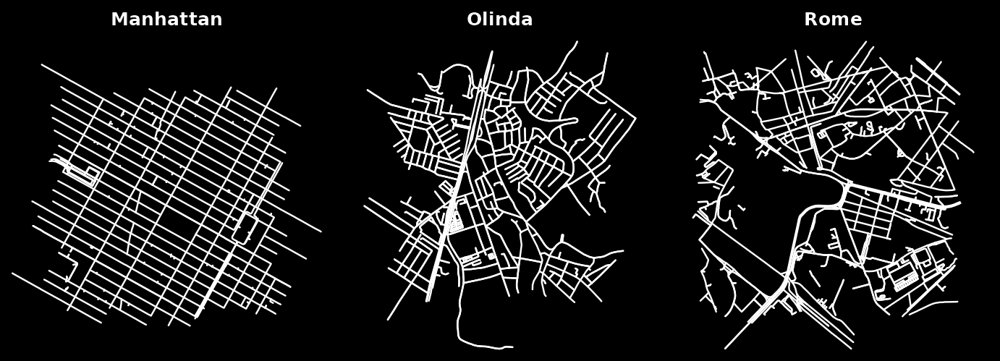

A figure-ground diagram draws a city’s streets in one colour on a solid background, with no labels or axes. Cropping different places to the same extent makes their network form directly comparable — one of the most recognisable OSMnx visuals (Boeing 2025, Figure 3).
A single diagram
ox_plot_figure_ground() renders any
osm_graph. Here is the bundled real network of central
Olinda, Brazil (loaded offline):
g <- ox_example("olinda")
ox_plot_figure_ground(g)
Comparing network form
The package bundles three real networks that span the morphological spectrum: a rigid grid (Midtown Manhattan), an irregular colonial core (Olinda), and an ancient organic city (Rome). Side by side, their differences are immediate:
op <- par(mfrow = c(1, 3))
ox_plot_figure_ground(ox_example("manhattan"), title = "Manhattan")
ox_plot_figure_ground(ox_example("olinda"), title = "Olinda")
ox_plot_figure_ground(ox_example("rome"), title = "Rome")
par(op)This is the visual counterpart to street-orientation entropy (see the Street orientation article): Manhattan’s grid reads as a few crisp directions, while Rome’s tangle points everywhere.
Your own places
With network access, build a figure-ground for any place. Cropping each to the same buffer distance keeps the comparison fair:
places <- c("Barcelona, Spain", "Tunis, Tunisia", "Salt Lake City, Utah, USA")
op <- par(mfrow = c(1, 3))
for (p in places) {
g <- ox_graph_from_address(p, dist = 800, network_type = "drive") |>
ox_simplify()
ox_plot_figure_ground(g, title = p)
}
par(op)Use ox_graph_from_point() with a fixed dist
(e.g. 805 m ≈ half a mile) to crop every city to the same
one-square-mile window.